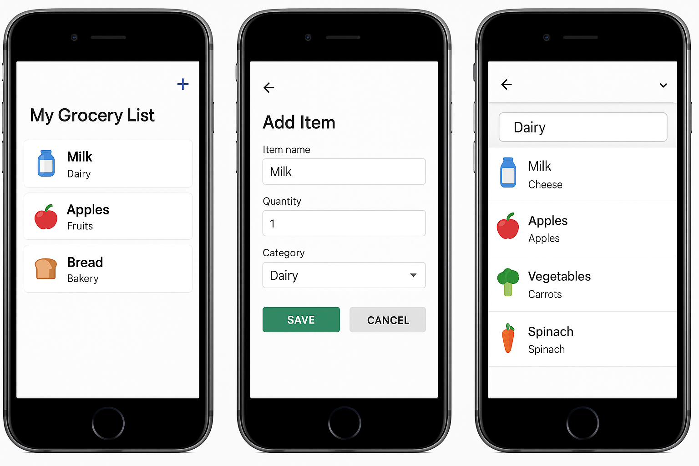
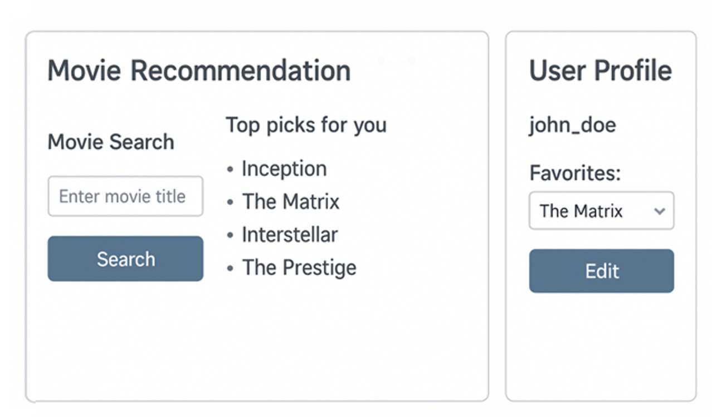
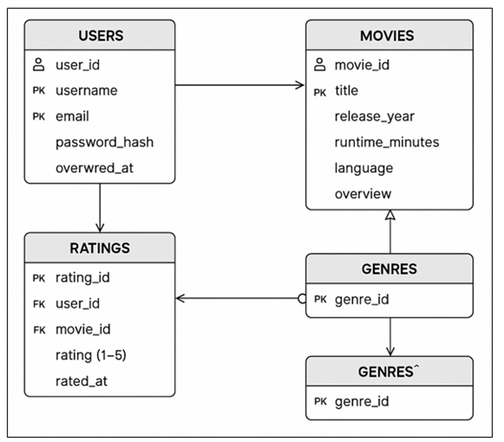
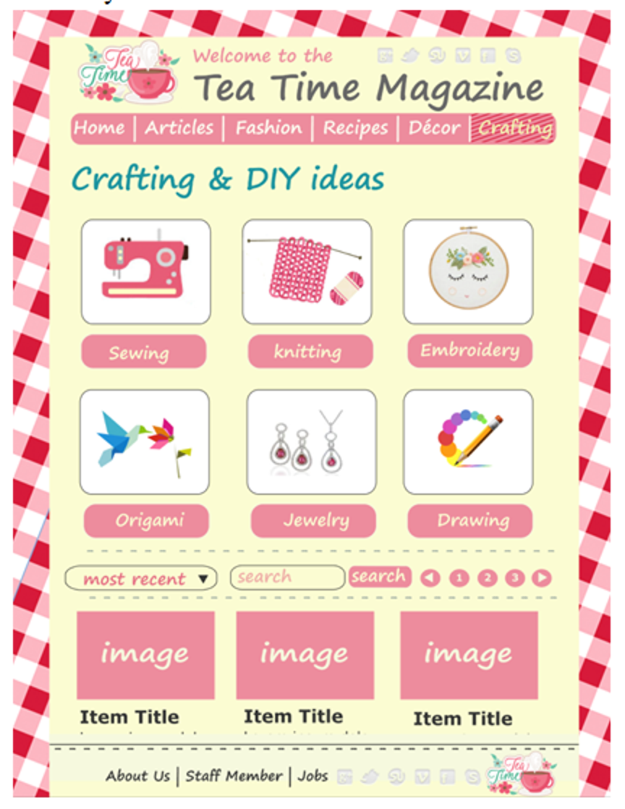

Engineering Course Projects:
Mobile Grocery List App (CSI 4230-Mobile App Development)
- Built an Android app that allows users to add, edit, and categorize grocery items.
-
Implemented SQLite for persistent storage and integrated barcode scanning API.
-
Improved user efficiency by adding reminders and a clean, intuitive UI

Movie Recommendation System (CSI 3450 – Database Systems)
- Designed and implemented a relational database in MySQL for storing user ratings and movie
metadata.
- Developed Python scripts to query data and recommend movies using collaborative filtering.
- Presented results with a web-based interface built using Flask.


Tea Time Magazine — Crafting & DIY Web Application (Front-End)
- Built a responsive magazine-style homepage with category tiles (Sewing, Knitting, Embroidery,Origami, Jewelry, Drawing), search, “most recent” sort, and pagination—as shown in the
attached screenshot.
-
Implemented reusable article-card components and category filters using HTML5, CSS3
(Flexbox/Grid), JavaScript; organized content via JSON and lightweight utilities.
-
Optimized for accessibility and mobile: semantic markup, ARIA labels, keyboard focus states,
and high-contrast color tokens; tested across modern browsers.
